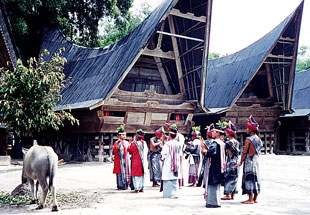
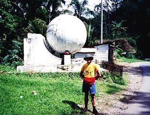
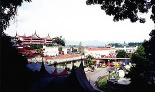
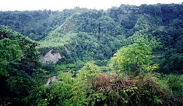

Sent: 8 Dec 1999 16:38 GMT
web version, with pictures. |
 |
| Prior Trav-E-Log: Sumatra | Sumatra is ... gardens and temples and ricefields.... |
(Note:) This is the 12th in a series of Trav-E-Logs sent while traveling in S.E.Asia between Oct 16, 1999 and Jan 22, 2000.Hi folks,
Arrived at Lake Toba in N. Sumatra to the sounds of Christmas Carols - in English, then Dutch, then Bahasa Indonesia. Yes, this is another pocket of Christianity (Protestant) in a predominantly Muslim country. The overnight bus trip took 14 hours from Bukittinggi on the Trans-Sumatran Highway. An eight year old tour book extols the highway as being paved the entire length, but the road condition now is unbelievable. In many places, busses and trucks can not pass one another, so every few hundred meters the bus would come to a halt, permitting opposing traffic to move. Then it would be our turn to move the next 400 meters, until either the traffic thinned out for awhile, or the road became wide enough to pass at "creeper speed". In other areas, the road would be so badly washed out, or buckled up, we could only bounce along at less than 1 MPH. Surprisingly, the bus did not make a special stop as we drove north across the equator, (as the minibus traveling from Pekanbaru to Bukittinggi had a week earlier).
Most of the trip was made in darkness, but images of the jungle could still be seen, especially after the 1/4 moon rose, about 3 in the morning. At times I could make out a few incredibly tall trees, and felt sad that so many of the buses travel only at night, capitalizing on the lower volume of traffic to cut driving times. Watching the night sky, and trying to figure out the constellations from this perspective was interesting. Orion was almost overhead, as was Pleiades, but clouds have prevented me from seeing the Southern Cross since I left the states. Then, just before daybreak, the bus turned another sharp switchback, and there was my old friend, the Big Dipper, pointing towards Polaris, which was below the horizon. I guess directional alignment at night near the equator is done by looking for the planets, and using them to indicate east and west, rather than the North Star to indicate the pole.
The bus was a big, 30-passenger Mercedes Benz, with on-board toilet. Although clearly marked with "no smoking" signs, about 8 passengers ignored the signs, and continually polluted the overly refrigerated air. Temperature must have been 63 or 64 in the passenger compartment, so I was happy my rain jacket and sarong were in my day sack. Travelers quickly learn the busses really like to crank down the A/C, so must take appropriate steps to keep warm. Just wish something could be done about the horrible weeds they smoke here! Even the "western" cigarettes smell horrible, so are obviously not the same formulation as in the USA. I'm told it is because the manufacturers have more latitude to alter the ingredients to get people hooked quicker.
Lake Toba did not hold my interest. Spent 48 hours on the island of Samosir, and all you hear when walking along the pathways are TVs blasting with their satellite hookups, stereos blasting pop music, and shops playing Xmas music. Highlights of the area included renting a broken-down bike and pedaling to the end of the island for a traditional music and dance program. The footwork in the performance was little more than shuffling in time to the music, but the costumes were fancy, and motions to dancers and audience were cordial. I worry that only one young man took part in the performance, and no young women were represented. The traditional village was interesting, and being at the base of trees being used as a heron and egret rookery gave me something to study while waiting for the performance to begin. So, next morning, took the 30 minute ferry back to the mainland, and boarded a non-A/C bus for the 15 hour trip back to Bukittinggi, where music and dance is still important.
Arrived at the bus company office at 3:45 AM, and decided to walk the 3 kilometers back into town, as there was certainly no reason to hurry. Checked with a few morning strollers to make sure I followed the right roads, as this was a new part of town to me. Was I happy to see my favorite breakfast haunt preparing to open just as I walked up to the front door! Only had to wait another 40 minutes for breakfast, so I sat down and tried to clean up, now that I was sheltered from the early morning dampness, as it had rained most of the night. One more day here, so back to the same homestay as before, the D'enam Hotel. To my amazement, my friends Gianni and Naomi, a couple that had left Bukittinggi the day before me, had also returned, making a similar positive statement: "We really like Bukittinggi". Spent the extra day hiking a trail in Sianok Canyon, where a band of monkeys frolicking in a stand of tall bamboo were seen. Bought a few batik art pieces that were designed locally, but made in Solo, on the island of Jawa. For my last evening in Bukittinggi, Gianni and Naomi showed me their favorite place to eat -- a food stand on the street, complete with table, benches, and a tarp to keep the rain out while you enjoy your meal.
Next came a grueling "30-hour" bus trip to Jakarta that actually took 39 hours, leaving the Bukittinggi terminus at 10 AM, and arriving at the Jakarta terminal about 1 AM, two days later. It was painful, as we were packed with about 45 passengers on the 30-seater. That means every inch of floor space is used for seating extra passengers -- and as I was in the first seat in front of the bus, I lost all legroom, and couldn't move my feet for the better part of 39 hours. One young man in front of me was irritated that I kept him from sitting ON my feet, and kept him from leaning on my legs. Saw a spider emerge from his hair on a strand of web, and then retreat, but I didn't say a thing; for who would believe me? In spite of my efforts to move my feet occasionally, both are now swollen. But they don't hurt, and I will try to take it easy for a day or two, here in Yogyakarta, affectionately called Yogya (pronounced Jogja). Oh, I got here from the Jakarta bus terminal by immediately taking a taxi to the train station in Jakarta, parking myself -- with pack and fiddle -- in front of the window selling tickets for the 9-hour morning express to Yogya, which was scheduled to leave at 6:10 AM. The window didn't open until 5 AM, so I spent that "quality time" playing my fiddle and talking to others as the line grew. This is the start of Ramadan, the Muslim holy month, when daylight fasting is the tradition, and many folks return home to spend the holidays. That means many are traveling, and reservations become mandatory. Hmm, and I'm about to head for Sulawesi, where I plan on traveling almost every day or two. Maybe I'm crazy on many accords, as I arrive in Yogya and start looking for a place to stay, looking dirty, hungry, and with no sleep nor shower for 56 hours. . . .
Bill